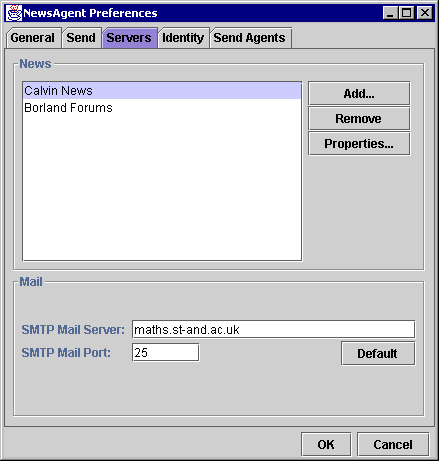

The Preferences Dialog: Servers Panel |
You can access the preferences dialog from the Edit: Preferences menu item, then by clicking on the Identity tab. Alternatively, use the Servers: Servers Preferences menu item to open the dialogue directly to the correct tab.

The Servers panel can be used to configure Internet servers you are using in Newsagent.
A list of all currently configured News Servers. You must select one of these before the Remove or Properties buttons become active.
Adds a new News Server. Equivalent to using the Servers: Add Server menu item. Displays the Add / Edit Server Properties Dialogue [link].
Removes the currently selected News Server. You will be prompted whether you are sure. This will delete all subscription information and cached headers for the News Server. This is equivalent to the Servers: Remove menu command.
This button is only enabled if a server is selected.
Displays properties of the currently selected News Server. This displays the Add / Edit Server Properties Dialogue [link]. It is equivalent to the Servers: Properties menu command.
This button is only enabled if a server is selected.
The outgoing email server to use when replying by electronic mail.
Outgoing email is not currently supported.
The IP port on the outgoing email server to use when replying by electronic mail. The normal value for this is 25.
Outgoing email is not currently supported.
Sets the SMTP Mail Port to the default value (25).
Outgoing email is not currently supported.
Save or abort changes to preferences.
Next Page: Identity Panel